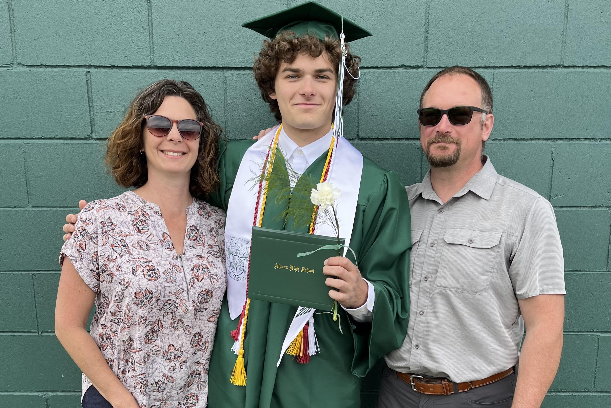
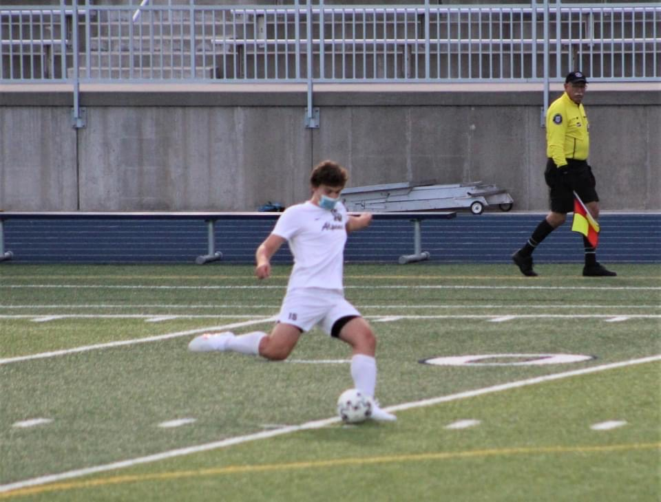
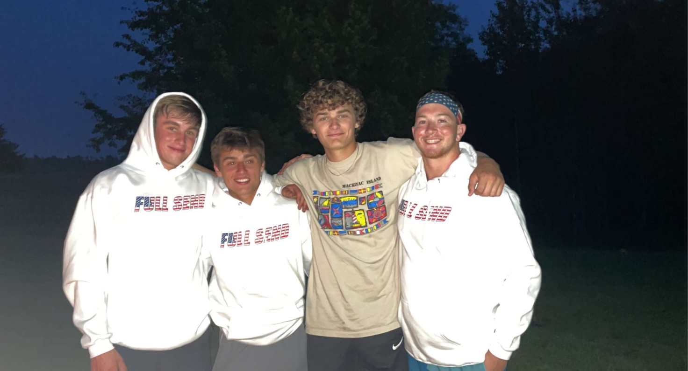
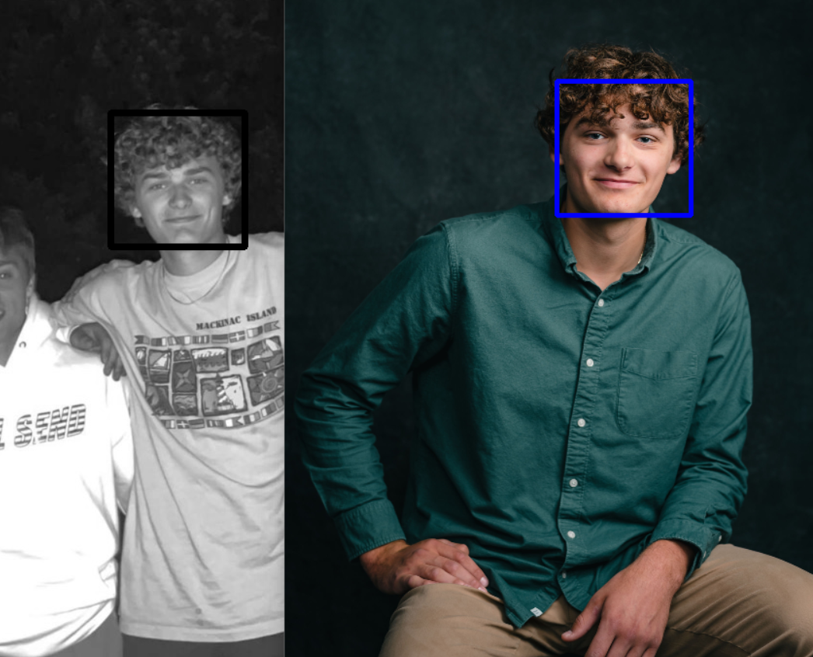
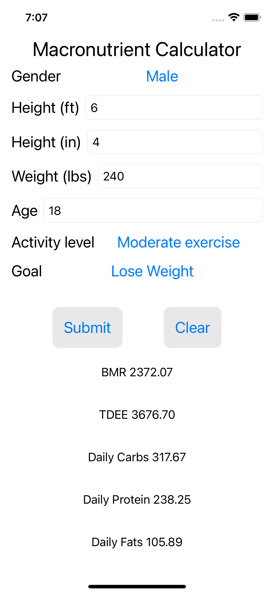
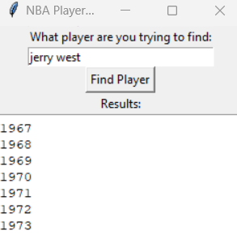

Abraham Brege
Home
Leetcode
Projects
Contact
Scroll
down

I graduated from Alpena High School in the class of 2022. My junior year of high school, I enrolled in the Early College program, which would lead me to start my freshman year of College at Alpena Community College during my senior year. After graduating in 2022, I stayed at ACC to complete my associates degree in Computer Information Systems which I completed in 2023. In the fall of 2023, I will be attending Nothern Michigan Univeristy to complete my bachelors degree in computer science.

In high school I played soccer at a varsity level and ran track. I had learned skills from these sports being the captain of the soccer team the 2022 season. I also was awarded the golden boot award for scoring the most goals on the team in the season. These years playing sports have taught me many life lessons and how to become a hard working, goal oriented person that carries over to the workplace.

In my free time, I like to spend time with my friends and family, enjoy nature, workout, practice my programming working on side projects, and playing soccer. I enjoy these things because they help me better myself and improve on all aspects of my well being!

This is a face matching application using image processing in python. For this project I used template matching, so it isn't the greatest for certain angles, lighting, things like that, but it works great for what I needed it to! I plan to implement a more advanced version of this in an upcoming app that I am making,

This is the first iPhone app that I made. I wanted to get the basics of the SwiftUI framework and also I have always wanted a simple, no extra features macronutrient calculator, and this was a great exercise! It was the perfect small project to start and I can't wait to go further in the realm of IOS development.

This project was my first time messing around with webscraping using beautiful soup and data science. I took the data from a website that listed the roster of the entire NBA league each year and created an algorithm that would get you every year that the player you entered played. Although the project isn't too large in size, it was a great way to advance my understanding of data structures and algorithms.